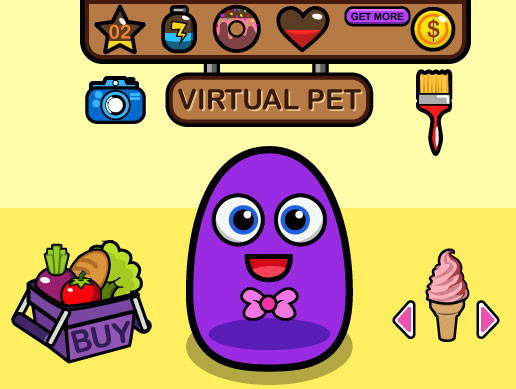
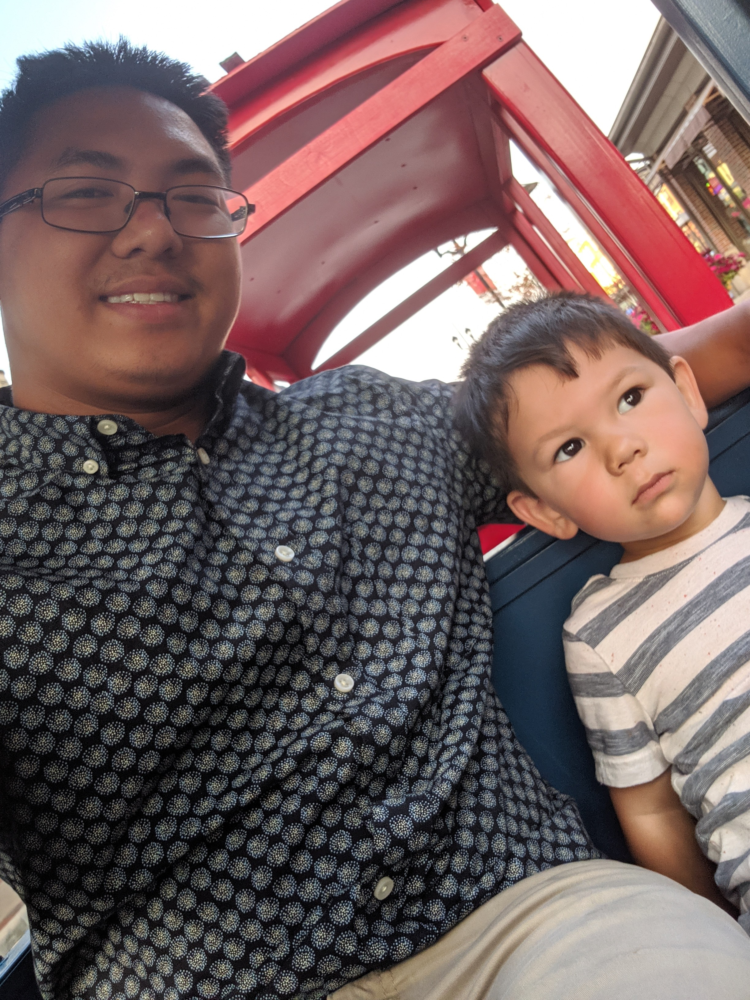

Pet Emulator
This is a pet emulator my team of three designed using .Net Core Console App, implementing C# and its principles. You can create, abopt, feed, and play with organic and robotic pets that are available

I am a certified full-stack software developer from We Can Code It coding bootcamp. I have a performance driven mentality to complete projects on time and exceeding project expectations. Through experience, I have learned to be agile and adaptable to any situation and have an acute eye for detail.
The languages and skills I am most proficient in are: C# • .NET Core • Active Server Pages / ASP.net • JavaScript • Flexbox • MVC • HTML • CSS • Grid • TDD • Agile (Scrum) • Object Oriented Programming (OOP) • AJAX • JSON • React • Restful APIs • Responsive Design / Mobile • Structured Query Language (SQL) • Relational Databases / MS SQL • Source Control / GitHub
If there is a language I do not know yet, I can learn and apply to any job or project.
To give you a scope of my abilities, below are some projects I have developed alone or on a team that implements various techniques.
This is a pet emulator my team of three designed using .Net Core Console App, implementing C# and its principles. You can create, abopt, feed, and play with organic and robotic pets that are available

This hospital uses C# as its language using .Net Core. In the hospital you are able to care for patients, pay employees and see if they are actually working.
Portfolio project in which i created this website to show and tell you about myself. Employed HTML and CSS.
I would be happy to discuss how I could contribute and grow your company!